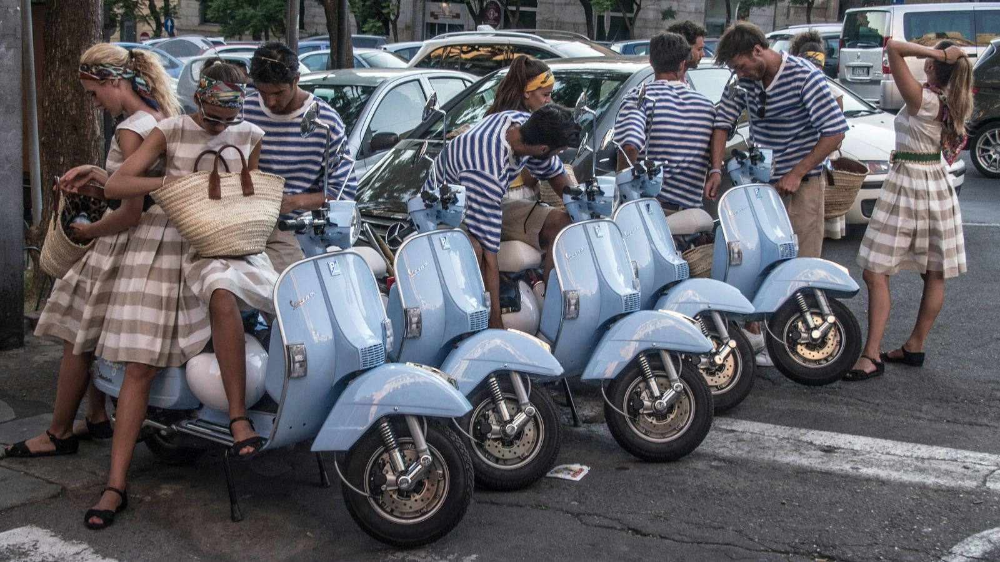
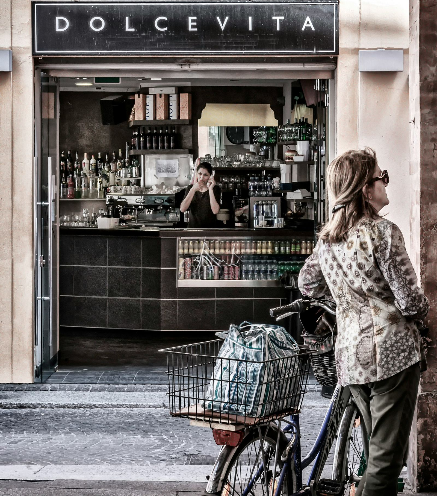

Explore the charm of Italian "Dolce Vita" through Fellini's iconic film. Be inspired by the luxury and fun of the 1950s.
Scopri il fascino della "Dolce Vita" italiana attraverso il celebre film di Fellini. Lasciati ispirare dal lusso e dal divertimento degli anni '50.
Sei curioso di scoprire il significato di "Dolce Vita" e come questo termine sia diventato un'icona dell'Italia glamour?

Federico Fellini, il famoso regista italiano, ha reso celebre questo concetto nel suo film del 1960 intitolato proprio "La Dolce Vita". Il film racconta la storia di un giornalista romano, interpretato da Marcello Mastroianni, immerso in una Roma vivace degli anni '50, colma di lusso e divertimento sfrenato.
La Dolce Vita rappresentava l'aspirazione a uno stile di vita senza preoccupazioni, caratterizzato da feste sfarzose, belle donne e successo mondano. Questo stile rifletteva l'epoca di boom economico dell'Italia, con una società desiderosa di abbracciare il nuovo e rompere con il passato.
Il film di Fellini ha suscitato grande interesse, contribuendo a diffondere l'idea di una vita lussuosa ma anche superficiale. Questa immagine ha attirato turisti da tutto il mondo, che volevano sperimentare di persona la Dolce Vita nelle affascinanti città italiane come Roma, Capri e Portofino.
La Dolce Vita ha ispirato molti artisti e scrittori, diventando un'icona della cultura italiana. Oggi, l'espressione è spesso usata per descrivere uno stile di vita rilassato e appagante, lontano dallo stress quotidiano.
Se vuoi vivere la Dolce Vita italiana, Roma è il posto giusto. Passeggiare per le sue strade è un'esperienza unica tra antichi monumenti, ma anche tra locali notturni e ristoranti rinomati che hanno visto gli anni d'oro della Dolce Vita.

La via della Dolce Vita è la famosa Via Vittorio Veneto, cuore pulsante della Roma glamour degli anni '50 e '60. Ancora oggi è una meta ambita per i viaggiatori che desiderano immergersi nell'atmosfera di lusso e divertimento di quegli anni.
In sintesi, la Dolce Vita è un invito a godersi la vita appieno, con un tocco di glamour e senza preoccupazioni. E chi può resistere al richiamo di Roma, la città eterna che incarna perfettamente questo stile di vita?
fonte: La Dolce Vita: il significato della dolce vita secondo Fellini
Parole chiave
| Esplorare | Guardare o cercare qualcosa con interesse e curiosità. |
| Fascino | Attrazione o bellezza che cattura l'attenzione. |
| Vita piacevole | Un modo di vivere che è piacevole e senza preoccupazioni. |
| Lusso | Qualcosa di costoso e di alta qualità. |
| Divertimento | Qualcosa che ti fa sentire felice e divertito. |
| Ispirare | Fornire motivazione o creatività a qualcuno. |
| Immerso | Essere completamente coinvolto o circondato da qualcosa. |
| Cultura | Tutto ciò che riguarda l'arte, la letteratura e le tradizioni di una società. |
| Unico | Qualcosa di speciale e diverso da tutto il resto. |
| Attraverso | Indica il mezzo o il metodo con cui qualcosa avviene o viene fatto. |
Esercizio
Domande
- Qual è il significato della frase "Dolce Vita" e chi l'ha resa famosa?
- In che periodo storico è ambientato il film di Fellini che ha contribuito a diffondere l'idea della Dolce Vita?
- Quali sono alcune delle attività rappresentative della Dolce Vita menzionate nell'articolo?
- Cosa ha attratto turisti da tutto il mondo in Italia durante l'epoca della Dolce Vita?
- Secondo l'articolo, qual è il contrario dello stile di vita della Dolce Vita?